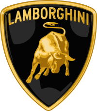
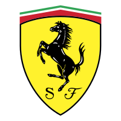

 LAMBORGHINI
Ao longo dos anos, a Lamborghini continuou a produzir uma série de carros icônicos, incluindo o Countach, Diablo, Murciélago, e mais recentemente, modelos como o Huracán e o Aventador. A marca é conhecida por seus carros exóticos e de alto desempenho, muitas vezes apresentando designs arrojados e motores poderosos. Ver mais
 FERRARI
A Ferrari, fundada por Enzo Ferrari em 1939, começou como fabricante de motores e peças. Em 1947, lançou seu primeiro carro de rua, o 125 S. A marca tornou-se lendária nas corridas, vencendo na Fórmula 1 e em Le Mans. Produziu carros icônicos como o 250 GTO e o F40. Ao longo dos anos, a Ferrari manteve uma reputação de luxo, desempenho e design excepcionais. A empresa passou por transições, expandindo de corridas para carros de produção em massa. Atualmente, a Ferrari continua a ser uma das marcas mais desejadas, incorporando inovações tecnológicas em seus modelos, como o LaFerrari e o SF90 Stradale. Ver mais
MERCEDES
Ao longo das décadas, a Mercedes-Benz destacou-se em corridas automobilísticas, especialmente nas décadas de 1930 e 1950. Após a Segunda Guerra Mundial, a empresa se recuperou e introduziu inovações de segurança. Tornou-se uma líder global na produção de carros de luxo com uma ampla gama de modelos, incluindo o icônico Classe S. Ver mais
FORD
A Ford Motor Company foi fundada por Henry Ford em 1903 nos Estados Unidos. Henry Ford revolucionou a indústria automobilística ao introduzir a produção em massa com a linha de montagem, tornando os carros acessíveis para o público em geral. O Modelo T, lançado em 1908, foi um marco nesse processo. A empresa expandiu globalmente, enfrentou desafios durante a Grande Depressão e contribuiu para esforços de guerra na Segunda Guerra Mundial. A Ford continuou a inovar, lançando o icônico Ford Mustang em 1964. Ao longo dos anos, enfrentou desafios econômicos, implementou estratégias de revitalização e, mais recentemente, concentrou-se em sustentabilidade e eletrificação. A Ford desempenhou um papel fundamental na evolução da indústria automobilística, destacando-se por sua abordagem pioneira e modelos emblemáticos. Ver mais